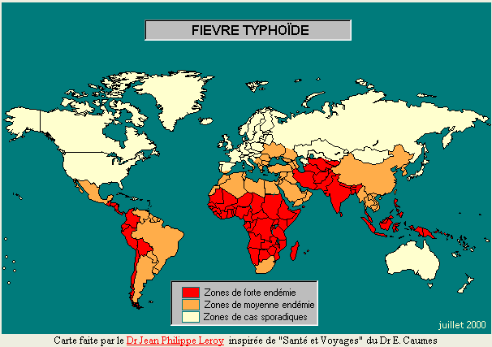
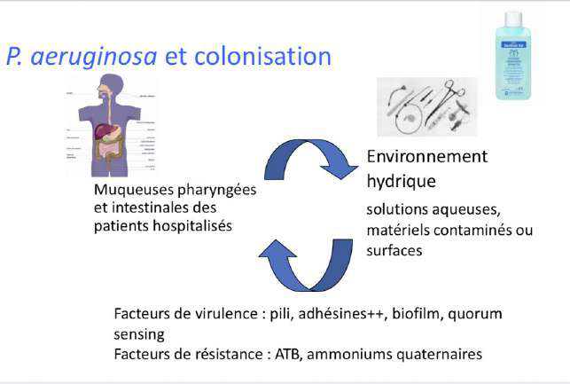
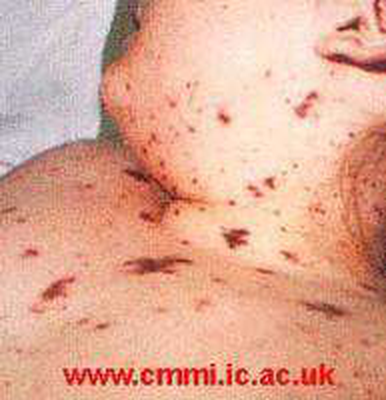
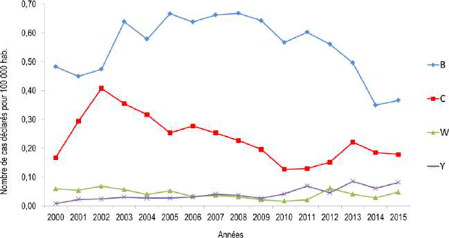

D'après le cours du Pr Brigitte Lamy (Bactériologie, parties 1 & 2, 12/06/2026), Ronéo n°3. Pivots : piège / point critique · diagnostic · traitement · seuil. C1G/C3G = céphalo. 1re/3e génération · BLSE = β-lactamase à spectre étendu · BMR = bactérie multi-résistante. Figures du cours intégrées.
Partie 1 · Bases structurales & résistance
1 · Paroi du Gram négatif & résistances naturelles
Paroi du Gram négatif = fine couche de peptidoglycane prise entre deux bicouches lipidiques (membrane externe + membrane plasmique) — à l'inverse du Gram+ (peptidoglycane épais, externe).
Coloration de Gram : la couche fine se décolore → les Gram− apparaissent roses (les Gram+ gardent le violet, peptidoglycane épais qui piège le colorant).
Conséquence majeure : la membrane externe est une barrière → résistances naturelles chez TOUS les Gram−. Les ATB hydrophobes et de masse moléculaire élevée ne pénètrent pas.
🚫 ATB naturellement inefficaces sur les Gram− : pénicillines G/V/M, macrolides & apparentés (kétolides), glycopeptides, acide fusidique, oxazolidinones.
Coloration de Gram — fixation → violet de gentiane → Lugol → décoloration (alcool) → fuchsine. Gram+ = violet (peptidoglycane épais) · Gram− = rose (décoloré).
2 · Entérobactéries : définition & 4 groupes de résistance
Bacilles à Gram négatif, mobiles ou non, commensaux du tube digestif et pathogènes opportunistes — exception : les Shigella = pathogènes stricts.
Infections très larges ; E. coli = 1re cause d'infection urinaire (cystite, PNA, prostatite). Toute infection à entérobactérie peut s'accompagner de bactériémie.
Diagnostic selon le site : ECBU (urinaire), hémocultures si sepsis.
Classification en 4 groupes selon la résistance naturelle aux β-lactamines (+++ à connaître)
Groupe
Mécanisme naturel
Espèces
R naturelle à…
1
Aucune β-lactamase → sensibles à toutes les β-lactamines
E. coli, Shigella, Proteus mirabilis, Salmonella
Rien (sensibles)
2
Pénicillinase naturelle
Klebsiella sp., Citrobacter koseri
Amoxicilline (mais S à amox + ac. clavulanique = Augmentin)
🔑 L'acide clavulanique (+ ticarcilline = Claventin ; ou tazobactam + pipéracilline) inhibe uniquement la pénicillinase, jamais utilisé seul. Piège QCM : une R à l'amoxicilline chez Klebsiella est naturelle, pas acquise.
Résistances ACQUISES (à différencier)
Mécanisme
Conséquence
Support
Pénicillinase acquise (ex. E. coli)
R amoxicilline, restaurée par ac. clavulanique ; n'touche pas les C3G
R naturelle = chromosome ; R acquise = chromosome (mutation) ou plasmide
Hyper-céphalosporinase (mutation, Enterobacter)
Dérépression sous C3G → préférer le céfépime (C4G), stable ; limiter les C3G
BLSE (pénicillinases mutées) = BMR
Clive pénicillines ET céphalosporines ; inhibée partiellement par ac. clavulanique ; reste les carbapénèmes
Carbapénémases (émergentes)
Dégradent les carbapénèmes → impasse thérapeutique. Très mauvaise nouvelle.
Partie 2 · Entérobactéries
3 · Escherichia coli
Commensal aéro-anaérobie dominant de la flore digestive, versatile (du portage sain au sepsis).
Infections urinaires (voie rétrograde 90 %)
Flore digestive/périnéale → méat → urètre → vessie (cystite) → rein (PNA) → prostate → sang (urosepsis).
Tableau
Clinique
Cystite (infection basse)
Brûlures mictionnelles, dysurie, pollakiurie, mictions impérieuses, douleur pelvienne ± hématurie. PAS de fièvre.
Fièvre + frissons ; tissu lipophile → mauvaise diffusion ATB → traitement prolongé sinon fausse récidive. Toute IU de l'homme = à risque de complication.
🔑 Bactériurie asymptomatique : le méat est colonisé par les mêmes bactéries → le labo ne distingue pas colonisation et infection sur le seul germe. L'ECBU s'interprète avec la clinique ; chez le sujet âgé/sondé/ID discordants, la clinique prime.
Diagnostic urinaire
Bandelette urinaire (1re étape)
Leucocyte-estérase (leucocytes) + nitrites (bactéries à nitrate-réductase). Positive si ≥ 1 des 2. Faux négatif : urines diluées, ATB déjà débuté, germe sans nitrites. Bonne VPN chez la femme ; chez l'homme une BU − n'exclut pas une prostatite.
ECBU (seuils)
Précautions : toilette, 2e jet, réplétion vésicale > 4 h. Positif : leucocyturie > 10⁴/mL + uropathogène ≥ 10³ UFC/mL (ou n'importe quelle bactérie ≥ 10⁵). Seuil plus bas pour E. coli (uropathogène reconnu).
Autres pouvoirs pathogènes
Méningite néonatale : 2e germe après le strepto B ; contamination dans la filière génitale ; sérotype K1 (capsule) ; C3G + aminoside.
Classée groupe 1 mais pathogène strict de l'Homme (pas opportuniste), très virulente → dysenterie bacillaire.
Espèces : S. dysenteriae, S. sonnei, S. flexneri, S. boydii. Transmission féco-orale ; incubation 2-5 j.
Clinique : syndrome invasif — fièvre élevée, douleurs abdominales, diarrhée glairo-sanglante (retour de zone d'endémie) ; toxines entéro/cyto/neurotoxiques.
Diagnostic : coproculture ; sur gélose Hektoen, E. coli = lactose +, Shigella = lactose −.
Traitement surtout symptomatique (ATB si dysenterie franche) ; pas de vaccin → hygiène, lavage des mains.
5 · Salmonella
2 espèces (S. enterica ++ & S. bongori) ; S. enterica = > 2500 sérovars (Typhi, Paratyphi, Typhimurium, Enteritidis sont des sérovars, pas des espèces). Antigènes paroi/capsule/flagelle → identification des clones (source commune en épidémie).
Fièvre typhoïde — S. Typhi / Paratyphi A,B,C
Réservoir strictement humain (porteurs sains — « Typhoid Mary »).
Physiopathologie : ingestion → cellules M → macrophages → ganglions mésentériques → septicémie → excrétion dans les selles. ⇒ hémocultures en début (phase septicémique), coprocultures plus tardives.
Fièvre en plateau 40 °C, diarrhée ocre fétide, tuphos (obnubilation → « typhoïde »), taches rosées, splénomégalie
Coprocultures +, Hc moins constantes
⚠️ Complications (endotoxines) : digestives (ulcérations/hémorragies), cardiovasculaires, neurologiques. Traitement : ATB actif sur bactéries intra-macrophagiques, diffusant dans la lymphe et éliminé actif dans la bile → fluoroquinolones (fièvre cède < 5 j dans 95 %), C3G, cotrimoxazole. DO + vaccination (TAB/Typhim).

Répartition mondiale de la fièvre typhoïde — forte endémie en Asie du Sud, Afrique, Amérique latine. À évoquer devant une fièvre prolongée au retour de zone d'endémie.
Salmonelloses mineures — S. Typhimurium / Enteritidis
Réservoir humain ET animal ; incubation > 8 h (jusqu'à 2-3 j) → fièvre, vomissements, diarrhée.
Sujet sain : symptomatique (réhydratation), pas d'ATB systématique (risque de sélection de résistances).
6 · Entérobactéries des groupes 2-3 (nosocomiales) & Yersinia
Klebsiella, Enterobacter, Serratia, Morganella, Providencia = pathogènes surtout nosocomiaux (pneumopathies, IU, ISO, infections sur matériel/KT/PAC), à partir du microbiote du patient.
Klebsiella pneumoniae (groupe 2, pénicillinase) : exception → peut donner une pneumopathie communautaire ; IU, pneumopathies, nosocomial.
Groupe 3 (Enterobacter…) : céphalosporinase, redoutés en nosocomial (hyperproduction élargit la résistance).
H. influenzae : petit BGN immobile, non sporulé, parfois capsulé (capsule = virulence + antigénicité). Associé à tort à la grippe → nom « influenzae ».
Exigeant : besoin des facteurs X et V → culture sur gélose chocolat (sang cuit qui libère les facteurs).
Souche
Pouvoir pathogène
Non capsulées
Infections ORL/respiratoires : OMA, sinusite, surinfection de bronchite chronique
💉 Vaccination anti-capsule type b (Hib) : succès majeur → les méningites à Haemophilus, jadis fréquentes/graves, sont devenues rares. Traitement : amox-ac. clavulanique (non grave) → C3G (grave), adapté à l'antibiogramme.
H. ducreyi : chancre mou (génital, non induré ≠ chancre syphilitique), adénopathies douloureuses fistulisantes ; rare en France, endémique Afrique/Orient ; rechercher autres IST.
BGN non fermentaire, aérobie strict, oxydase +, mobile (flagelle polaire), pousse sur milieux usuels, couleur vert-de-gris = bacille pyocyanique (« pus bleu »). Nosocomial opportuniste.
Réservoir environnemental = eau et milieux humides (piscines, siphons, endoscopes, nébulisateurs, respirateurs). Fleurs interdites en service d'ID (eau des vases = source chez l'aplasique fébrile).
Colonisation
Muqueuses pharyngées/intestinales, matériel, surfaces. Favorisée par pili, adhésines, biofilm, quorum sensing, résistance aux ammoniums quaternaires.
Virulence multifactorielle
Système de sécrétion type III (injection d'exotoxines), phospholipases, rhamnolipides (détersifs), métallopeptidase (dégrade les peptides antimicrobiens).
Pathogénicité
Communautaire (peu pathogène si IC) : kératites/abcès de cornée (graves +++), otite externe (« otite du nageur ») ou maligne (ID/diabétique), surinfection respiratoire (mucoviscidose).
Nosocomial : 3e responsable (~10 %) après E. coli (~25 %) et S. aureus (~15 %) ; pneumopathies des intubés (~20 %), IU sur sonde, brûlés/escarres, ISO ; bactériémies rares (< 10 %) mais mortalité ~1/3.
⚠️ Peu sensible aux ATB (R naturelles + acquises, mutants sous traitement). ATB actifs : ticarcilline/pipéracilline (+ inhibiteurs), ceftazidime, céfépime, aztréonam, imipénème ; amikacine/tobramycine ; ciprofloxacine ; fosfomycine ; colistine. Mécanismes de R : hyper-céphalosporinase, efflux, mutation de porine D2 (R isolée à l'imipénème), carbapénémases. FdR de multirésistance : hospitalisation > 3 sem, ATB longs, monothérapie.

Antibiogramme (diffusion en disques) — mesure des diamètres d'inhibition autour de chaque disque d'ATB ; indispensable pour Pseudomonas vu ses multiples résistances.
Partie 4 · Cocci à Gram négatif — Neisseria
Les Neisseria sont des diplocoques Gram négatif « en grains de café », aérobies stricts, oxydase +, catalase +, poussant sur gélose chocolat enrichie.
9 · Neisseria meningitidis (méningocoque)
Bactérie exclusivement humaine, commensale du rhinopharynx (~10 % de portage, jusqu'à 40 % en collectivité/caserne). Transmission directe (sécrétions rhinopharyngées).
Sérogroupes (> 12 : A, B, C, X, Y, W135…) : B + C ≈ 80 % ; 99 % dus à A, B, C, Y, W135.
Forme
Fréquence
Clinique & pronostic
Méningite
~2/3
Méningococcémie inaperçue → BHE → méningite. Syndrome méningé (raideur de nuque, céphalées, vomissements en jet, photo-phonophobie, fièvre). Mortalité 2-4 % si traitée.
Purpura fulminans
~1/3
Méningococcémie aiguë + purpura fulminans (± méningite) = choc septique chez un sujet souvent sain, mortalité ~30 %. Autres : articulaire, péricardique, pleural.

Purpura fulminans — purpura nécrotique, extensif, ne s'effaçant pas à la vitropression. Urgence absolue : antibiothérapie immédiate (avant transfert) devant tout purpura fébrile.
Diagnostic
LCR (forte cellularité, PNN, diplocoques Gram− à l'ED), hémocultures, PCR sur sang, biopsie cutanée. Puis culture, sérogroupage, antibiogramme/CMI.
📋 Prophylaxie : DO, enquête autour du cas. Chimioprophylaxie = rifampicine pour les contacts proches (sécrétions oropharyngées, contact buccal, ou < 1 m > 2 h) ± vaccination selon le sérogroupe (A, C, Y, W135, B).

Épidémiologie des sérogroupes (France, évolution temporelle) — le sérogroupe B domine longtemps, le C a motivé la vaccination, émergence des W et Y.
10 · Neisseria gonorrhoeae (gonocoque)
Bactérie exclusivement humaine des voies génitales → IST. Transmission directe (rapport sexuel) ou à la naissance.
Ophtalmie néonatale (→ cécité) ; prévention par collyre antiseptique/ATB à la naissance.
Diagnostic
Prélèvements urétral/col/écoulement/rectal/pharyngé/articulaire, hémocultures si dissémination ; culture sur gélose chocolat + ATB sous CO₂ ; biologie moléculaire (PCR) avec recherche conjointe de Chlamydia trachomatis.
Traitement & prévention
Traiter précocement, rendre non contagieux, traiter les partenaires (effet « ping-pong ») et une IST associée. Préservatif, éducation sexuelle. Pas de vaccin efficace.